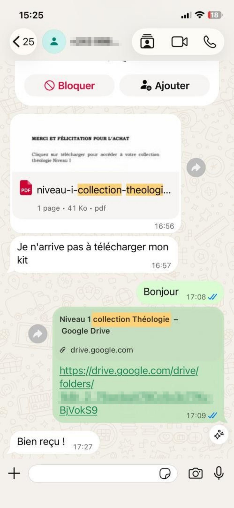

Vous voulez approfondir votre connaissance de la Bible ?
Beaucoup de chrétiens, étudiants en théologie, prédicateurs et responsables d'église souhaitent mieux comprendre les Écritures, la doctrine, l'Église et le ministère, mais leurs ressources sont souvent dispersées.
Des cours difficiles à trouver au même endroit
Des livres théologiques dispersés
Des notions bibliques parfois difficiles à approfondir
Un manque de structure pour progresser dans l'étude
Et si vous pouviez réunir tout cela dans une seule collection ?
Découvrez la Collection Théologie — Niveau 1
Cette collection a été pensée comme une base de travail pour toute personne souhaitant progresser dans l'étude biblique et théologique. Elle rassemble :
- 🎓 14 cours théologiques
- 📚 14 livres
- 🎁 Plus de 400 livres chrétiens en bonus
🎓 14 COURS THÉOLOGIQUES INCLUS
Commencez par acquérir les bases et approfondir progressivement votre compréhension.
Homilétique 1–2
Apprenez les bases de la préparation et de la communication des messages bibliques.
Introduction à l'Ancien Testament
Découvrez le contexte, la structure et les grandes lignes de l'Ancien Testament.
Introduction au Nouveau Testament
Comprenez le contexte, les livres et les principaux thèmes du Nouveau Testament.
Introduction au Pentateuque
Explorez les cinq premiers livres de la Bible et leur importance dans l'histoire biblique.
Introduction à la Bibliologie
Approfondissez l'étude de la Bible, de sa nature et de son rôle.
Administration de l'Église
Découvrez les principes essentiels liés à l'organisation et à l'administration de l'Église.
Géographie Biblique
Situez les principaux événements bibliques dans leur environnement géographique.
Le Livre des Actes
Étudiez le développement de l'Église primitive et la mission des premiers disciples.
Théologie biblique de l'évangélisation
Explorez les fondements bibliques de l'évangélisation.
Anthropologie biblique
Étudiez la compréhension biblique de l'être humain.
Cours d'Ecclésiologie
Approfondissez la nature, la mission et le fonctionnement de l'Église.
Leadership pastoral
Découvrez les principes de leadership applicables au ministère pastoral.
Doctrine fondamentale
Étudiez les fondements essentiels de la doctrine chrétienne.
Épîtres pauliniennes
Approfondissez l'enseignement et les grands thèmes des lettres de Paul.
Et ce n'est pas tout…
📚 14 LIVRES THÉOLOGIQUES INCLUS
Complétez votre formation avec une sélection de livres pour approfondir votre étude.
- 01📖Comment comprendre la Bible
- 02📖Comment raisonner à partir des Écritures
- 03📖Géographie du Nouveau Testament
- 04📖Esquisse de Théologie Biblique
- 05📖Histoire d'Israël
- 06📖Histoire de l'Église (Tome II)
- 07📖Homilétique (édition 2017)
- 08📖Homilétique – Norman Holmes
- 09📖Introduction au Nouveau Testament
- 10📖Introduction au culte chrétien
- 11📖L'Évangile de Luc et les Actes
- 12📖La Géographie de la Bible
- 13📖Les Doctrines de la Bible
- 14📖Manuel sur le Pentateuque
14 livres + 14 cours = une base théologique riche et structurée.
🎁 BONUS : PLUS DE 400 LIVRES CHRÉTIENS OFFERTS
En plus des cours et livres de la Collection Théologie Niveau 1, vous recevez également une bibliothèque de plus de 400 livres chrétiens en bonus.
VOICI CE QUE VOUS RECEVEZ
Une seule collection. Des centaines de ressources pour apprendre, approfondir et grandir.
À QUI S'ADRESSE CETTE COLLECTION ?
Étudiants en théologie
Pasteurs
Prédicateurs
Enseignants bibliques
Responsables d'église
Serviteurs de Dieu
Chrétiens souhaitant approfondir leur connaissance biblique
CE QUE CETTE COLLECTION PEUT VOUS APPORTER
- Mieux comprendre les Écritures
- Approfondir ses connaissances théologiques
- Renforcer ses bases doctrinales
- Mieux préparer ses enseignements
- Comprendre davantage l'Église et son fonctionnement
- Développer ses connaissances bibliques
- Disposer de nombreuses ressources au même endroit
⭐ ILS PARLENT DE LEUR EXPÉRIENCE
Découvrez les retours de personnes ayant découvert nos ressources


UNE COLLECTION COMPLÈTE POUR VOTRE PARCOURS THÉOLOGIQUE
- 🎓 14 cours
- 📚 14 livres
- 🎁 +400 livres chrétiens en bonus
Accédez à l'offre et poursuivez votre parcours d'étude.
👉 JE VEUX LA COLLECTION THÉOLOGIEQUESTIONS FRÉQUENTES
Que contient la Collection Théologie Niveau 1 ?
Elle comprend 14 cours théologiques, 14 livres théologiques et un bonus de plus de 400 livres chrétiens.
À qui s'adresse cette collection ?
Aux étudiants en théologie, pasteurs, prédicateurs, responsables d'église, enseignants bibliques et à toute personne souhaitant approfondir ses connaissances.
Le bonus est-il inclus ?
Oui, plus de 400 livres chrétiens sont proposés en bonus avec la collection.
Comment effectuer l'achat ?
Cliquez sur l'un des boutons « Je veux la collection ». Vous serez redirigé vers la page de paiement Chariow.
Comment vais-je recevoir les ressources ?
Les modalités d'accès ou de livraison numérique sont indiquées après l'achat sur Chariow.
PRÊT À APPROFONDIR VOTRE CONNAISSANCE BIBLIQUE ?
14 cours + 14 livres + plus de 400 livres chrétiens en bonus.
Commencez votre parcours dès maintenant.
📚 JE VEUX LA COLLECTION